Kullandığım Resimler
Kitap Kapakları:
Ateş ve Kan:
https://www.amazon.com.tr/Ateş-ve-Kan-George-Martin/dp/6051736557İntibah:
https://www.amazon.com.tr/İntibah-Günümüz-Türkçesiyle-Edebiyatı-Klasikleri/dp/60529545901984:
https://www.amazon.com/1984-Celal-Uster-George-Orwell/dp/9750718534Cesur Yeni Dünya:
https://www.amazon.com.tr/Cesur-Yeni-Dünya-Aldous-Huxley/dp/9756902167Gurur ve Önyargı:
https://www.kitapyurdu.com/kitap/gurur-ve-onyargi/656135.htmlAraba Sevdası:
https://www.amazon.com.tr/ARABA-SEVDASI-Recaizade-Mahmut-Ekrem/dp/9944184624Dönüşüm:
https://www.amazon.com.tr/Dönüşüm-Franz-Kafka/dp/6053609323Hayvan Çiftliği:
https://www.amazon.com.tr/Hayvan-Çiftliği-George-Orwell/dp/6254052040/ref=sr_1_3?crid=3C2W7WSPIJSPG&keywords=hayvan+çiftliği&qid=1703357880&s=books&sprefix=hayva%2Cstripbooks%2C93&sr=1-3İçimizdeki Şeytan:
https://www.amazon.com.tr/İçimizdeki-Şeytan-Sabahattin-Ali/dp/9753638035/ref=sr_1_2?crid=3G7E8UZ5AFI86&keywords=içimizdeki+şeytan&qid=1703357898&s=books&sprefix=içimiz%2Cstripbooks%2C91&sr=1-2Suç ve Ceza:
https://www.amazon.com.tr/Suç-Ceza-Hasan-Yücel-Klasikleri/dp/975458902X/ref=sr_1_1?crid=3FX92ZO8NJVAN&keywords=suç+ve+ceza&qid=1703357918&s=books&sprefix=suç+%2Cstripbooks%2C93&sr=1-1Martin Eden:
https://www.amazon.com.tr/Martin-Eden-Jack-London/dp/6053322121/ref=sr_1_1?crid=KR89ZKNERYT2&keywords=martin+eden&qid=1703357935&s=books&sprefix=martin+ede%2Cstripbooks%2C99&sr=1-1Sefiller:
https://www.kobo.com/tr/tr/ebook/sefiller-4Şeker Portakalı:
https://www.amazon.com.tr/Şeker-Portakalı-Jose-Mauro-Vasconcelos/dp/9750738608Simyacı:
https://www.amazon.com.tr/Simyacı-Paulo-Coelho/dp/975072643XTutunamayanlar:
https://www.amazon.com.tr/Tutunamayanlar-Bütün-Eserleri-Oğuz-Atay/dp/9754700117/ref=sr_1_1?crid=3RKEYA187WPJ0&keywords=tutunamayanlar&qid=1703358066&s=books&sprefix=tutuna%2Cstripbooks%2C91&sr=1-1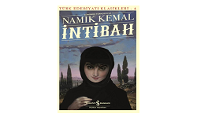 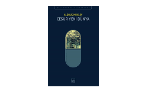 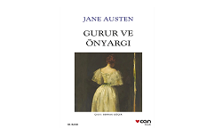
 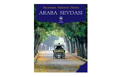
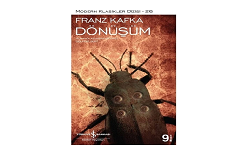
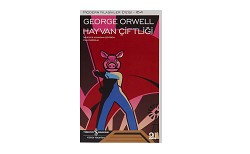
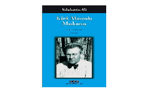
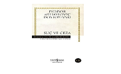
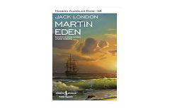
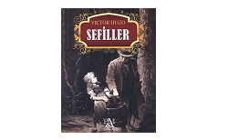
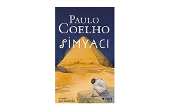
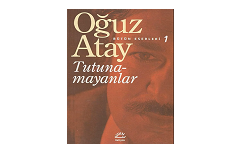
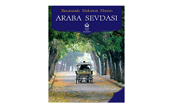
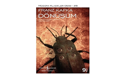
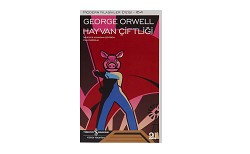
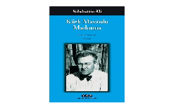
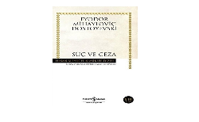
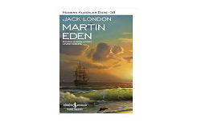
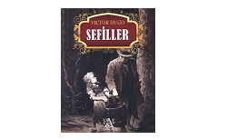
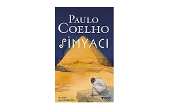
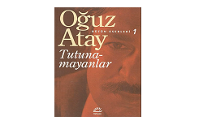
Anasayfa Resmi:
https://www.flaticon.com/free-icon/ebook_2784602Eleştirmen1:
https://tr.wikipedia.org/wiki/Elif_Şafak#/media/Dosya:Elif_Shafak_photo.jpg
Eleştirmen2:
https://tr.wikipedia.org/wiki/George_R._R._Martin#/media/Dosya:Portrait_photoshoot_at_Worldcon_75,_Helsinki,_before_the_Hugo_Awards_–_George_R._R._Martin.jpg
Tutunamayanlar:
https://hacknbreak.com/konusmacilar/sinan-sulun/
Eleştirmen Resmi4: https://www.idefix.com/yazar/ayse-kulin-214762